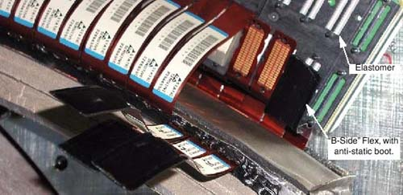
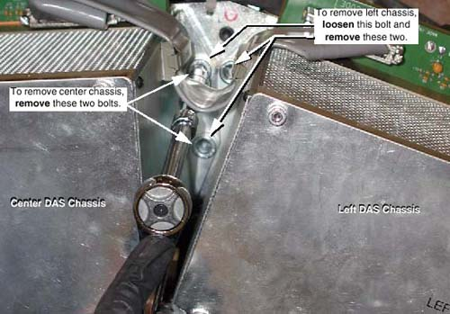

Operating Documentation
Direction 5181166-800, Rev# 7
BrightSpeed Select Service Methods Adv
Operating Documentation |
| Required Persons | Preliminary Reqs | Procedure | Finalization |
|---|---|---|---|
| 1 |
The GDAS backplane is not a separate FRU; the entire chassis must be replaced. This procedure covers replacement of the left, center, and right chassis.
| Last Revised: | March 21, 2007 |
| Item | Qty | Effectivity | Part# | Manufacturer | |
|---|---|---|---|---|---|
| Standard FE Tool Kit | 1 | - | - | - | |
| Item | Qty | Effectivity | Part# | Manufacturer | |
|---|---|---|---|---|---|
| GDAS Backplane | As needed. | - | - | - | |
| Ensure that you are properly grounded by using the appropriate ESD wrist strap and cord connected to a good ground point in the Gantry. | |
| CRUSH HAZARD. | |
| UNEXPECTED GANTRY ROTATION CAN CAUSE SERIOUS INJURY. | |
| Never service the gantry with the axial drive enabled. Use the gantry rotation lock to lock out gantry rotation. See safety menu of Service Document gui for appropriate procedures. |
| POTENTIAL FOR SHOCK | |
| VOLTAGE MAY BE PRESENT. | |
| Use proper lockout/tagout procedures before replacing components. See safety menu of Service Document gui for appropriate procedures. |
Position the table to its lowest position.
Remove the gantry right side cover.
Position the gantry at the 12 o'clock position.
| Always turn OFF the HVDC before the 120VAC. Turning OFF 120VAC power before HVDC power can result in equipment damage. | |
Turn OFF Axial Enable, HVDC, and 120VAC switches on the Service Switch panel.
Remove the gantry top and front covers.
Remove the DAS air plenum DAS Air Plenum Removal and Installation.
Put on wrist strap and use good ESD precautions.
Using Detector Handling precautions (verify use of ESD strap, grounding and Finger Cots), disconnect Detector flexes from the appropriate backplane (see Illustration 1).
Remove Flex housing outer (A-Side) covers by removing the housing Cover clamps.
Left chassis: covers 11 - 15
Center chassis: covers 6 - 10
Right chassis: covers 1 - 5
There are 2 clamps per cover. Each clamp is held on by a 3mm captive hex cap screw. Use a 2.5mm Hex screwdriver bit to remove each clamp and cover.
Carefully remove each flex from the backplane and bend each A-Side Flex straight out towards the front, so that it is perpendicular to the Detector window. This is to gain more access to the B-Side.
Place an Anti-static Detector Flex Boot on each flex.
Remove all Inner (B-Side) Clamps, covers, and flexes, using the same procedure as the A-Side. Place anti-static boots on flexes.
Set the covers aside and keep them separated from the Inner (B-Side) covers. A-side covers are different from B-Side covers.
Illustration 1: Flex Cables (With Anti-Static Boots)

Disconnect the appropriate power cables:
Left chassis: J110, Power cable between Center and Left Chassis
Center chassis:
J99, Power cable between Center and Right Chassis.
J97, Power cable between Center and Left Chassis.
J72, Power Cable between Center Chassis and Power Supplies
J73, Power Sense Cable
Right chassis: J49, power cable between center and right chassis
Disconnect the appropriate data cables:
Left chassis: J34, Data cable between Center and Left Chassis
Center chassis:
J8, Data cable between Center and Left Chassis.
J7, Data cable between Center and Right Chassis.
Right chassis:
J15, data cable between center and right chassis
J33, data cable between right chassis and DHCB
J31, CAN cable between right chassis and ORP
J32, data cable between right chassis and OBC
J30, CAN cable between right chassis and collimator
TX port, fiber optic cable between right chassis and slip-ring
| NOTE: | Cover the appropriate DAS chassis with a towel or similar item to protect the DAS from particle contamination when removing or installing gantry balance weights. |
Remove weights as necessary for removal of chassis.
| Weights must be replaced in the exact sequence and positioning as from which they are removed. Gantry rotation will be adversely affected by improper balancing. | |
While holding on to the DAS chassis, remove four (4) large 10mm cap screws holding the chassis to the DAS mounting blocks (see Illustration 2). When the last cap screw is removed, remove the chassis from the Gantry and place on an ESD pad (to protect converter cards).
Illustration 2: DAS Chassis Mounting Bolts (Between Left and Center Chassis)

The center chassis shares one bolt each with the left and right chassis.
When removing the left or right chassis, the second bolt on the shared side of the center chassis must be loosened slightly.
Be careful not to damage detector flexes.
| Ensure that you are properly grounded by using the appropriate ESD wrist strap and cord connected to a good ground point in the Gantry. | |
Carefully place the DAS Chassis in position. Use special care:
Do not smash or otherwise damage Detector flexes
Keep Detector Flex Boots in place
Ensure that ALL Detector flexes are in front of backplane
Secure by using four (4) large 12mm Cap screws, with Loctite 271 applied to each of the screw’s threads. Torque each chassis mounting screw to 49 ft-lbs (66.4 N-m).
When replacing the left or right chassis, be sure to also tighten the center chassis bolt that was loosened for removal.
Connect the appropriate power cables:
Left chassis: J110, Power cable between Center and Left Chassis
Center chassis:
J99, Power cable between Center and Right Chassis.
J97, Power cable between Center and Left Chassis.
J72, Power Cable between Center Chassis and Power Supplies
J73, Power Sense Cable
Right chassis: J49, power cable between center and right chassis
Connect Data Cables
Left chassis: J34, Data cable between Center and Left Chassis
Center chassis:
J8, Data cable between Center and Left Chassis.
J7, Data cable between Center and Right Chassis.
Right chassis:
J15, data cable between center and right chassis
J33, data cable between right chassis and DHCB
J31, CAN cable between right chassis and ORP
J32, data cable between right chassis and OBC
J30, CAN cable between right chassis and collimator
TX port, fiber optic cable between right chassis and slip-ring
If applicable, transfer the Converter boards from the replaced chassis to the new chassis.
Confirm ESD practices
Remove Chassis board cover
Remove 1 board at a time and transfer each board from the original chassis to the new chassis in the same board slot location.
Install Detector flexes (B-Side)
Confirm ESD and Detector flex handling practices. Use ESD Wrist strap and Finger Cots.
Remove retainer that is covering housing and holding Elastomers in place.
Verify all Elastomers are in their slots in the housings and are free from debris (spray with air).
Remove Flex Boot and visually inspect each flex before installing for debris. Clean with approved Alcohol pads where required.
Install Inner row (B-Side) flexes first.
Install 4 flexes over appropriate housing slots and install cover and clamps to hold flexes in place. Torque each clamp cap screw to 13 in-lbs (1.47 N-m) no more, no less.
B-Side Checkout
Keep Axial switch Off, but turn on Gantry 120VAC and 550VDC switches.
Do NOT Rotate Gantry because the A-Side Detector flexes are not connected.
Turn on DAS Power switch
Verify Converter board power-up diagnostics passed, via NO Board LEDs remain on.
From the Operators console, perform a Hardware Reset
Perform DAS / Detector Integration to verify B-Side connections
When the B-Side is okay, install Outer row (A-Side) flexes.
Install Detector flexes (A-Side)
Turn OFF the DAS Power Switch and 550VDC Switch
Remove Flex Boot and visually inspect each flex for debris before installing (spray with air). Clean with approved Alcohol pads where required.
Install 4 flexes over appropriate housing slots and install cover and clamps to hold flexes in place. Torque each clamp cap screw to 13 in-lbs (1.47 N-m) no more, no less.
Turn DAS and Gantry Power switches ON.
Perform DAS / Detector Integration
If applicable, install chassis board cover.
If the right chassis was replaced, reattach the fiber-optic cable to the transmit (TX) port.
Install air plenum, per DAS Air Plenum Removal and Installation.
Return weights to their original sequence and position (if applicable).
Disengage rotational lock.
Restore power.
See “Finalization” for tests after replacing a DAS Chassis.
Install / Close all covers.
DAS Detector Integration
Perform Interconnect and X-Ray Verification.
Perform Pop Noise and Microphonics Test.
Perform FastCal.
PerformImage Quality Test Procedures .
Perform a “Save System State”.